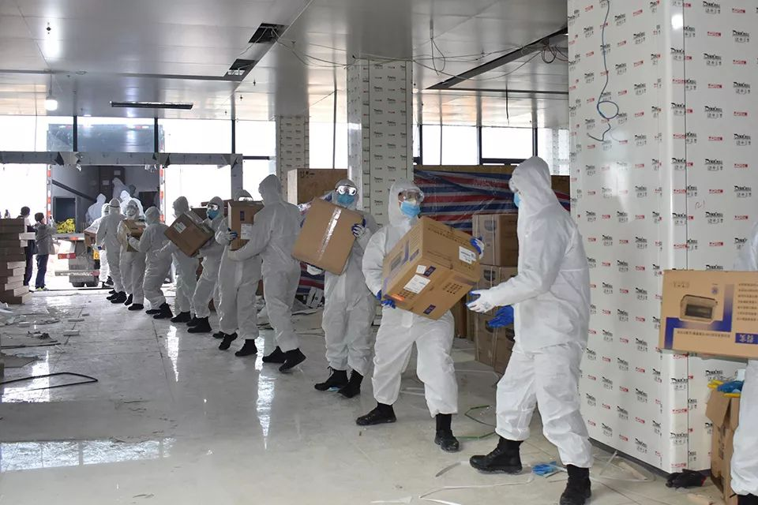

黄冈，疫情下的床位扩张战
原文链接 备份链接 和病毒的战争，也是一场和床位有关的战争。1月30日，黄冈卫健委主任唐志红接受督察组询问时无法回答黄冈有多少床位这个问题，一天后被撤职。那么，黄冈的床位究竟有多少？在这场争夺战中，怎么才能赢得更多的时间？ 文｜易方兴 郑 …


*************▲*************2020年1月29日，武警湖北总队黄冈支队官兵为担负隔离任务的黄冈市大别山区域医疗中心抢运物资。（新华社/图）
全文共*2888*字，阅读大约需要7分钟。
“我之前从来没在卫生院里看到过防护服。”
刘河镇卫生院获得的第一批防护物资是在1月27日抵达的。
刘河镇是黄冈乡镇防疫现状的一个缩影，黄冈市第二人民医院派来了五名医护人员支援发热门诊，这已是上级医院所能提供的至多支持。
此后两周里，这座城市的确诊病例迅速从0飙升至1645，将这个以高考闻名的地级市变成了新冠肺炎的“疫情副中心”。
本文首发于南方周末 未经授权 不得转载
文 | 南方周末记者 李玉楼
责任编辑 | 吴筱羽
2020年1月31日，黄冈市蕲春县刘河镇卫生院的发热病房交付了。病房建在一处驾校内，在1200平米的板房中设置了8个集装箱，这是这个小镇的“小汤山医院”，据称能安置40位病人。
这是病毒学家周荣出的主意，他是刘河镇人，目前是钟南山团队的核心成员。
1月25日，周荣从广州驱车至黄冈，应邀参加防疫工作，他提出了将防控关口前移至社区医疗中心和乡镇卫生院先隔离的思路。次日，刘河镇政府收到了新建集装箱医院的命令。
彼时，刘河镇卫生院已有四名医务人员疑似感染新型冠状病毒，乡镇卫生院不具备传染病隔离条件，而该县三家定点医院早已人满为患。
1月23日，武汉和黄冈相继封城，封锁线很快延至县城和乡村，乡村患者无法外出就医。
分级诊疗金字塔尖的三甲医院自顾不暇，重症患者转诊无望，县乡医院不得不承担起兜底收治的功能，成为基层抵抗疫情的小堡垒。
1月27日，黄冈市将定点发热门诊扩大至127家，新增了大量乡镇卫生院。事实上，在此之前，他们已经承担起救治任务。
1
刘河镇卫生院的第一例高疑似病例出现在1月23日，次日即传出该院全部医护人员被感染，医院关停的消息。该院副院长康奎雨随后回应媒体称，该院有四名医务人员出现发热，其中包括该院院长汪东方，但医院仍在正常接诊。
刘河镇是蕲春县数一数二的大镇，刘河镇卫生院有180位医务人员，这一规模的医疗机构，在这场疫情中承担起了重要的责任。
李萌是刘河镇卫生院护士，据她介绍，第一例病人是通过CT筛查出来的，当时大家已经提高警惕，患者立马就隔离了，然而还是有同事中招了。
“我之前从来没在卫生院里看到过防护服。”李萌告诉南方周末记者，刘河镇卫生院获得的第一批防护物资是在1月27日抵达的。
作为有99000人的大镇，刘河镇卫生院的病房里很快住满了发热患者，“除夕夜就快二十个了，此后转进转出，现在还有三十来个”。卫生院没有隔离条件，只能轻症跟轻症放在一块，重症跟重症放在一块儿，病房也来不及按照传染病房的标准进行改造。
1月27日，周荣有关防控关口前移的建议被黄冈市采纳。当天，刘河镇镇长傅正锋接到县防疫指挥部的命令，要在两天内建一个临时发热门诊，但县里只能拨付部分资金，剩余的需要自筹。
傅正锋只能转求在外乡贤，通过蕲春各地商会筹得180余万现金和80万元物资，新建的发热病房在1月31日交付使用后，新增患者全部安置在集装箱病房中。
带着核酸检测仪器回到蕲春的周荣计划在当地组建检测实验室，蕲春县人民医院副院长1月29日接受采访时表示该院已经具备检测能力，但2月4日湖北省卫健委公布的检测机构名单中却未见该院。
刘河镇卫生院工作人员告诉南方周末记者，该院不具备确诊权，但可以利用仪器进行初筛。
周荣的回乡和新病房的建立，提振了刘河镇乡亲的信心，“全县唯独刘河能新建起临时病房，”一位参与建设的当地居民告诉南方周末记者，“主要是因为我们镇出人才，既有专家，又有老板。”
2
刘河镇是黄冈乡镇防疫现状的一个缩影，黄冈市第二人民医院派来了五名医护人员支援发热门诊。
这已是上级医院所能提供的至多支持。距离武汉更近的黄冈市区和那里的上级医院，更早接受了病毒挑战，以至于在这场防疫作战中自顾不暇。
这场发端自武汉的疫情在2019年12月8日开始出现。
2020年1月10日，黄冈市中心医院发现了医务人员被感染，该院是黄冈市唯一的三甲医院。一周后，黄冈下辖区县医院的发热病人出现激增。
黄冈市已是除武汉外首个通报出现确诊病例的湖北城市，但病毒的出现事实上来得更早。
武汉大学中南医院重症医学科主任彭志勇日前向媒体透露，1月6日，他所在的医院接诊了一名来自黄冈的病人，当时已是重症。
1月10日，一位家住黄冈市蕲春县的孕妇发病，当天辗转黄冈市区四所医院后住进了武汉大学中南医院，并被确诊为不明原因肺炎。
公开报道中，最早被感染的黄冈医务人员是在黄冈市中心医院工作的护士董春风，她在1月7日出现发烧、咳嗽等症状，1月10日出现呼吸困难后住院。当黄冈市在1月19日获得第一批试剂盒时，董春风的病情已基本缓解，1月22日就基本痊愈了。
就在董春风患病入院的这十几天中，黄冈市区的医院迎来了发热病人激增，1月14日，发烧且肺部感染的患者张庆已经需要在黄冈市中医院排队等候床位。
至1月中旬，黄冈市内的各大医院实际上已经如临大敌，但家住在中心医院附近的林杉却未有丝毫察觉。林杉1月18日从外地回到黄冈，彼时黄冈市区还没有任何异常，大街上看不到一个戴口罩的人。
直至1月20日下午，林杉在前往中心医院对面药房买药时，发现药店柜员戴起了口罩。次日，大街上才出现零星戴口罩的行人。
药店柜员戴起口罩的晚上，钟南山在央视连线中明确了新冠病毒会“人传人”。一场风暴正在黄冈这座紧邻武汉的城市酝酿，此后两周里，这座城市的确诊病例迅速从0飙升至1645，将这个以高考闻名的地级市变成了新冠肺炎的“疫情副中心”。
3
黄冈确实被疫情搞懵了。
这座拥有750万人口的湖北人口第二大市，仅有一家三甲医院，春节前涌入的60万武汉返乡者为疫情暴发积蓄了巨大的隐患。
距武汉78公里的黄冈市与武汉联系紧密，高铁最快仅需要27分钟即可到达，百度地图提供的数据显示，武汉封城的前三天，黄冈均位居武汉出行目的地第二位，占比13%左右。
1月24日，黄冈市拿到用于检测试剂盒的第二天，该市疾控中心发布求助信息，这一承担全黄冈新冠肺炎检测任务的机构只有一台RT-PCR仪器，希望社会捐赠仪器和三级防护装备，一套仪器和耗材的费用大致在35万元左右。
按照黄冈市副市长陈少敏的说法，1月20日检测权下放至黄冈市，但没有拿到检测试剂盒，23日拿到试剂盒后，又面临人员不足等问题。
2月2日之前，黄冈下辖各县中只有浠水、麻城、蕲春县确诊病例激增，原因在于，这几个县当时拥有了核酸检测能力。
每天能检测多少样本？到底有多少张床位？收治了多少病患？
1月29日之前，鲜少有黄冈官员能搞清楚这些问题。当天，时任黄冈市卫健委主任唐志红在面对中央督查组提问时，表示自己不掌握这些数据。
或正因如此，黄冈市直至1月24日才决定征用大别山医学中心作为隔离医院，此前仅划拨三家小型医疗机构用作隔离，仅三百余张床位。
黄冈市长邱丽新在1月31日的新闻发布会上回答了数字问题：及时发现发热病人4726人，筹措了4200张床位，每日的核酸检测能力达到400例。
邱丽新还介绍，1月22日至1月31日累计出动了3497人次开展监察检查，检查重点部位和场所6416处，处理、处分党员干部337人。值得注意的是，其中一半以上是1月30日中央电视台播出唐志红“一问三不知”之后作出的处分，其中包含大量乡镇和村级干部。
唐志红被提名免职当天，大别山医疗中心投入运营。2月4日，黄冈市区全部确诊病例均转入该集中收治点。而蕲春县刘河镇的患者，则从1月31日后就陆续住进了新建的刘河镇“小汤山”。
刘河镇卫生院一名工作人员告诉南方周末记者，卫生院一级没有试剂盒，对经过血象和CT初筛的轻症患者按照新冠肺炎诊疗，重症患者才送往县医院确诊。这意味着，庞大的黄冈乡镇卫生院中，仍然还有相当数量的未确诊病例。
蕲春县人民医院已经预料到可能从卫生院涌来的病患，2月2日，该院将外科大楼全部腾空，按照感染病房进行改造，新增了400张床位，截止到2月4日24时，蕲春县累计确诊153例。
（应受访者要求，李萌、张庆、林杉为化名）

征集

《南方周末》现向所有身处新冠肺炎一线的读者公开征集新闻线索。我们欢迎武汉及周边城市医患联系记者，提供防疫前线的一手资讯，讲述您的新春疫情见闻。若您不在武汉，但您身处之所也有与疫情相关的重要新闻线索，亦欢迎您与我们分享。疫情仍在蔓延，南方周末将执笔记录每位国人在疫情面前的希望与困境，与广大读者共同面对疫情。祝愿所有读者朋友们，新春平安。线索可直接给本篇文章留言，格式为：【线索】+内容+您的电话（绝对会对您的个人信息保密）
原文链接 备份链接 和病毒的战争，也是一场和床位有关的战争。1月30日，黄冈卫健委主任唐志红接受督察组询问时无法回答黄冈有多少床位这个问题，一天后被撤职。那么，黄冈的床位究竟有多少？在这场争夺战中，怎么才能赢得更多的时间？ 文｜易方兴 郑 …
原文链接 备份链接 黄冈是湖北省第二个确诊病例过千的城市，黄冈市长公开承认在应对疫情方面准备不充分、防控措施不严、部分干部作风不实 文 |《财经》记者 黄姝静 姚佳莹 编辑 | 鲁伟 黄冈是湖北省内疫情严重程度仅次于武汉的城市，截 …
原文链接 备份链接 02.02.2020本文字数：1995，阅读时长大约3.5分钟 导读：随着送检加快，黄冈今天确诊病例还将继续大增，但医药物资短缺等客观形势下，防控形势十分严峻。 作者 | 第一财经 陈益刊 紧邻武汉的湖北省黄冈市，新 …
原文链接 备份链接 *************▲************* 刘大钺。 （采访对象供图/图） 全文共*2013*字，阅读大约需要5分钟。 各地支援的物资已经是到了，一问，说这东西还有很多，但是找谁领，不知道，这个渠道不太 …
原文链接 备份链接 希望大家在关注武汉之余 能把目光和关怀投向同样危急的黄冈接受采访的时候，孙亮哭了。 不到半个月的时间，父母相续感染上新冠肺炎，如今父亲去世、母亲至今仍在ICU。他之所以接受采访，是因为想把真实的情况告知更多的人，希望大 …